WordFlora logo v3: three directions
Brief: docs/pm/logo-critique.md. v2 for comparison: logo/final. Small renders are actual pixels (PNG, device scale 1); the 320 px column is the SVG.
Hero flower (hero)
Plain ink-green "Word"; one large five-petal rose flower with separate teardrop petals on the Flora o. The icon is that same flower on deep green: gold centre disc (the o with its counter filled) and a round amber pistil. Owner options: the same icon with the two-dot-one-arc face, and the cream-ground version.
Round 2: sRGB PNGs; icon centre is now a filled gold disc with a round pistil on deep green (cream version kept as icon-alt-cream); new icon-smile option; ring gap 40 to 52 u (mono-solid 60 u); petals that would reach the l or r are scaled to fit instead of cut, so every tip stays round; spacing solved on two bands with a 60 u F-l arm gap. Round 2b: re-spaced to the corrected A6 rule (native r-d reference; F-l up to +30%, arm gap 45 u); "Word" 6.9% narrower than v2; flower scaled to 0.92 so every petal stays at least 80% visible. Round 2c: W-o, o-r, r-d, d-F back at the native r-d gap (about 209 u), "Word" 4.0% narrower than v2; icon-smile face level.


Key numbers
| Petals on cream / on dark (A1) | 4.05 / 4.43 |
| Worst CVD: petals on dark | 3.55 |
| Petals vs ring, light; ring gap at 29 px (A2) | 1.13; 52 u = 1.61 px |
| Word vs Flora light / dark (A4) | 3.15 / 1.39 |
| Worst CVD: petals on cream; Word/Flora (A5) | 3.59; 3.04 |
| Letter pairs vs the as-set r-d, x band (A6; l-o, o-r, r-a <= +15%%) | W-o +0% o-r +0% r-d +0% d-F +0% F-l +25% l-o +13% o-r +11% r-a +6% (worst checked 12.7%) |
| Letter pairs vs the as-set r-d, full o band (reported) | W-o +2% o-r +9% r-d +0% d-F -2% F-l +29% l-o +18% o-r +20% r-a +3% (worst checked 19.6%) |
| F-l vs the as-set r-d, x / o (x <= +30%%) | +25.4% / +29.1% |
| "Word" ink width vs v2 (2853 u) | 2740 u (-4.0%) |
| F-l arm gap (min) | 45 u |
| Least-visible petal, twin / solo / mono-solid (>= 80%%) | 85% / 84% / 84% |
| Petal width at 29 px tall (A3, >= 4 px) | 9.1 px |
| Aspect; height at 172 / 262 pt wide (A10) | 5.88 : 1; 29.2 / 44.5 pt |
Full tables and the A1 to A13 self-check: hero/notes.md.
Wordmark: light, dark, mono, Increase Contrast
Increase Contrast
Solo lockup (below 130 pt wide)
App icon next to the shipping icon and v2
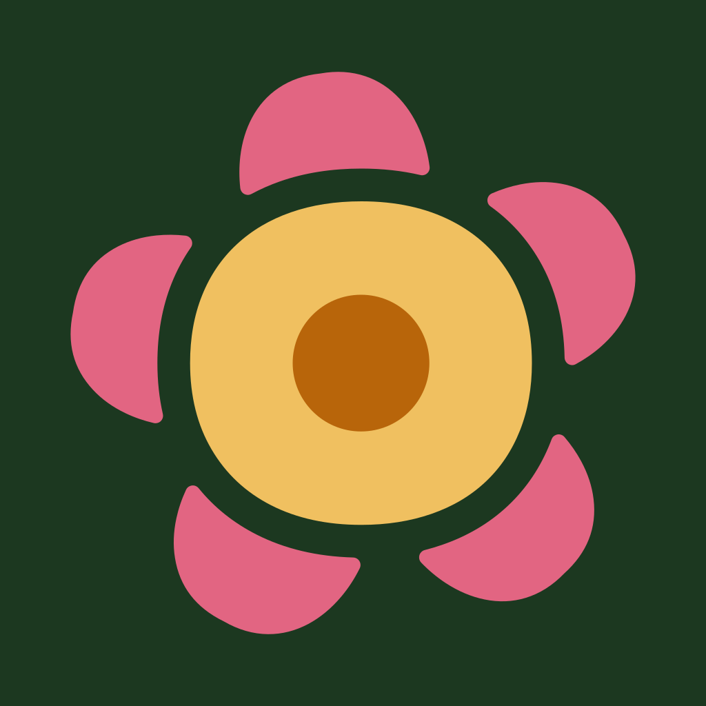
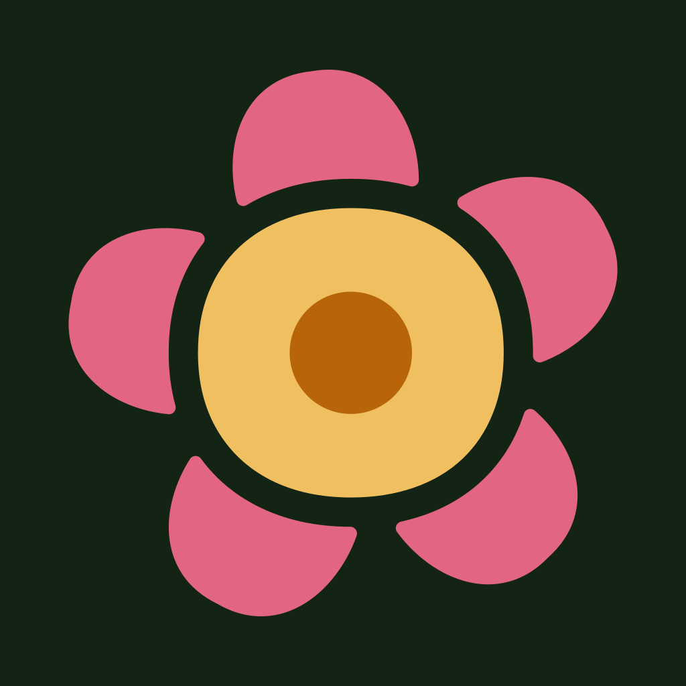
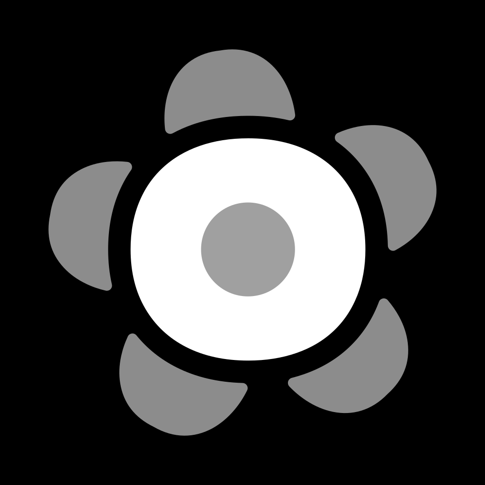
owner option
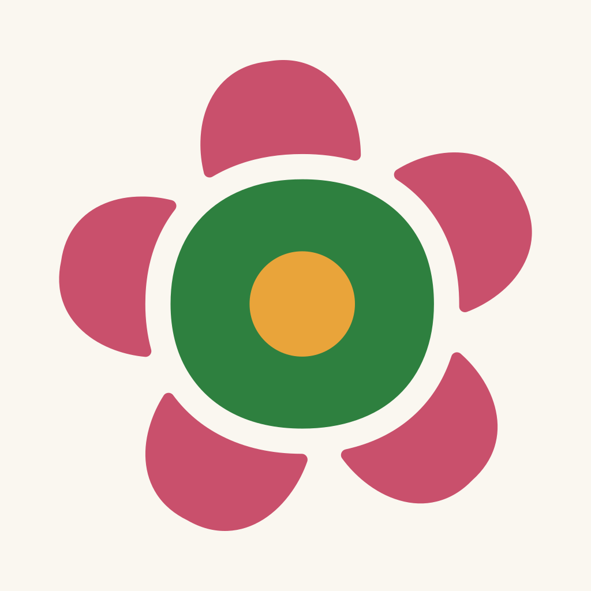
owner option
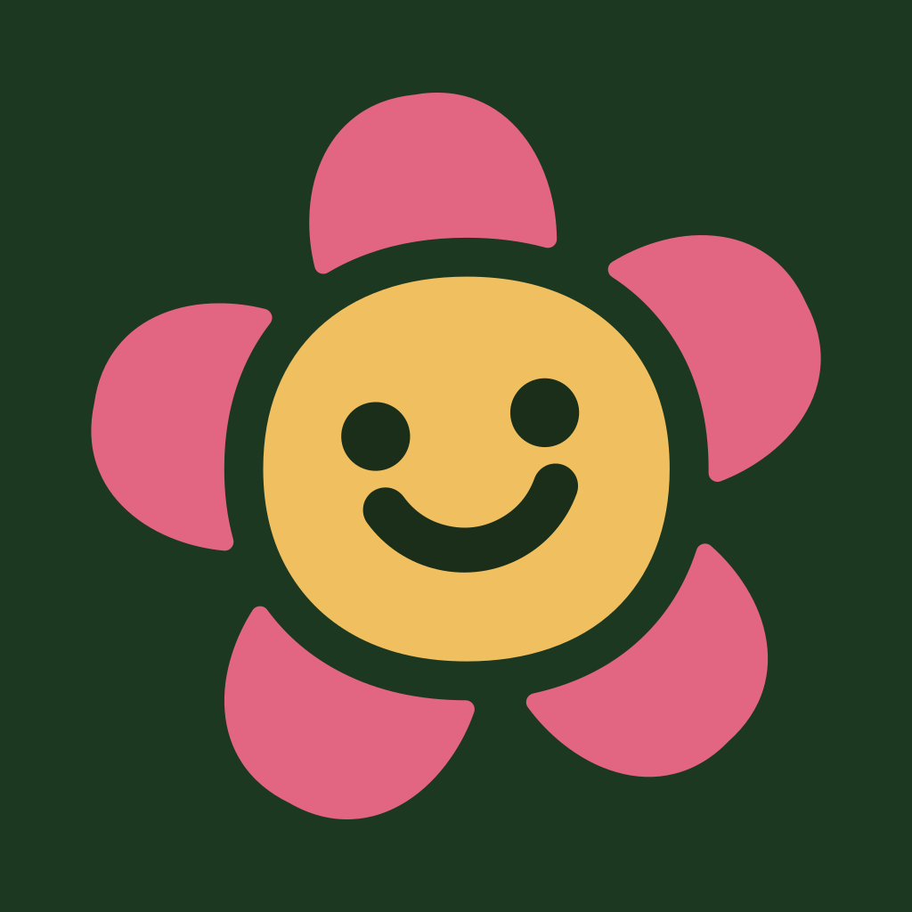
"Word" alone at 320 px, v2 above v3, same letter size
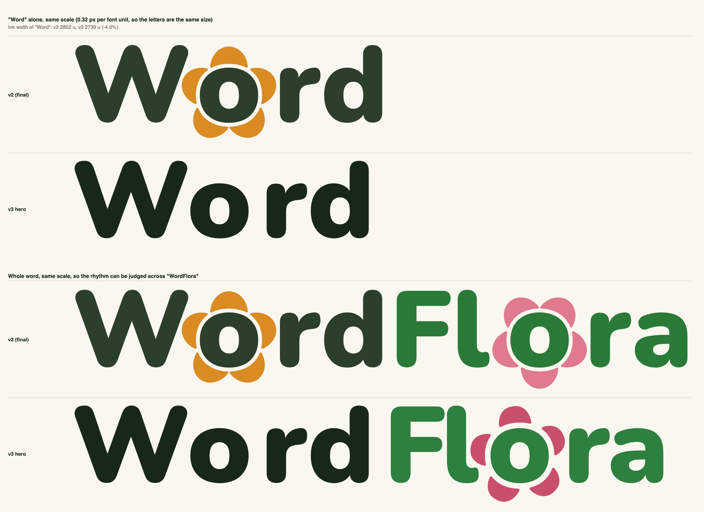
Before / after sheets


Unified, with the smile (unified)
One flower for the whole brand: five round amber petals around an o-shaped centre. In type the centre is the letter o; in the icon the roles invert (cream petals, amber centre) and the centre wears the face, tilted with the bloom. The face never goes inside a letter.
Round 2: sRGB PNGs; icon roles inverted (cream petals, amber centre, face tilted -8 degrees) to step away from Flowey; light bloom #C27200 to orange #C86800; mono-solid gets five radial slits; ring gap 52 u (mono-solid 60 u); two-band spacing with a 60 u F-l arm gap. Round 2b: re-spaced to the corrected A6 rule (native r-d reference; F-l up to +30%, arm gap 45 u); "Word" 6.9% narrower than v2; flower scaled to 0.92 so every petal stays at least 80% visible. Round 2c: W-o, o-r, r-d, d-F back at the native r-d gap (about 209 u); notch depth re-measured valley to chord (2.2 to 3.6 px at 60 px).
Key numbers
| Petals on cream / on dark (A1) | 3.61 / 6.20 |
| Worst CVD: petals on dark | 5.37 |
| Petals vs ring, light; ring gap at 29 px (A2) | 1.27; 52 u = 1.62 px |
| Word vs Flora light / dark (A4) | 3.15 / 1.56 |
| Worst CVD: petals on cream; Word/Flora (A5) | 3.25; 3.04 |
| Letter pairs vs the as-set r-d, x band (A6; l-o, o-r, r-a <= +15%%) | W-o +0% o-r +0% r-d +0% d-F +0% F-l +25% l-o +13% o-r +11% r-a +6% (worst checked 12.7%) |
| Letter pairs vs the as-set r-d, full o band (reported) | W-o +2% o-r +9% r-d +0% d-F -2% F-l +29% l-o +18% o-r +20% r-a +3% (worst checked 19.6%) |
| F-l vs the as-set r-d, x / o (x <= +30%%) | +25.4% / +29.1% |
| "Word" ink width vs v2 (2853 u) | 2740 u (-4.0%) |
| F-l arm gap (min) | 45 u |
| Least-visible petal, twin / solo / mono-solid (>= 80%%) | 85% / 97% / 83% |
| Petal width at 29 px tall (A3, >= 4 px) | 11.1 px |
| Aspect; height at 172 / 262 pt wide (A10) | 5.93 : 1; 29.0 / 44.2 pt |
Full tables and the A1 to A13 self-check: unified/notes.md.
Wordmark: light, dark, mono, Increase Contrast
Increase Contrast
Solo lockup (below 130 pt wide)
App icon next to the shipping icon and v2
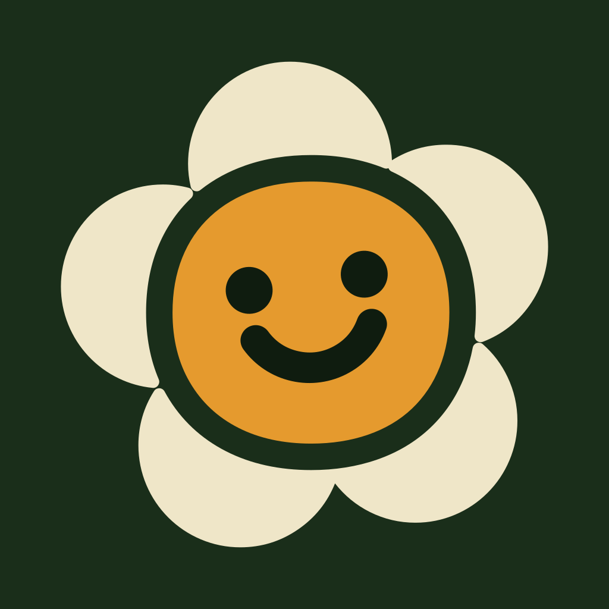
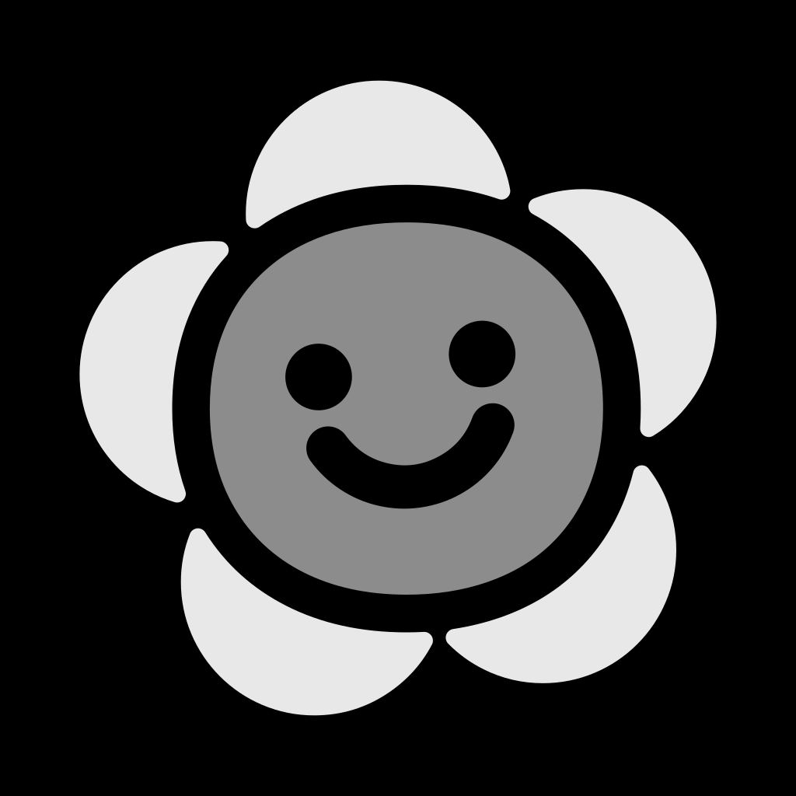
"Word" alone at 320 px, v2 above v3, same letter size
Before / after sheets


Centre bloom disc (centre)
A solid rose bloom disc with five clear scallops behind a plain green Flora o, so the flower reads as one shape at 29 px. The icon is the same bloom with a smaller amber centre disc and a round pistil.
Round 2: sRGB PNGs; the o ring is Flora green again (no third colour); bloom rebuilt from 215 u circles on a 270 u circle, turned -8 degrees, notches about 7.5 px at 60 px; icon centre scaled to 0.75 with a filled disc and round pistil, tinted centre mid-grey; ring gap 52 u (mono-solid 60 u); two-band spacing. Round 2b: re-spaced to the corrected A6 rule (native r-d reference; F-l up to +30%, arm gap 45 u); "Word" 6.9% narrower than v2; flower scaled to 0.91 so every petal stays at least 80% visible. Round 2c: W-o, o-r, r-d, d-F back at the native r-d gap (about 209 u); notch depth re-measured valley to chord (1.6 to 2.5 px at 60 px, below C2's 5 px).
Key numbers
| Petals on cream / on dark (A1) | 3.58 / 4.14 |
| Worst CVD: petals on dark | 3.29 |
| Petals vs ring, light; ring gap at 29 px (A2) | 1.28; 52 u = 1.64 px |
| Word vs Flora light / dark (A4) | 3.15 / 1.56 |
| Worst CVD: petals on cream; Word/Flora (A5) | 3.21; 3.04 |
| Letter pairs vs the as-set r-d, x band (A6; l-o, o-r, r-a <= +15%%) | W-o +0% o-r +0% r-d +0% d-F +0% F-l +25% l-o +13% o-r +11% r-a +6% (worst checked 12.7%) |
| Letter pairs vs the as-set r-d, full o band (reported) | W-o +2% o-r +9% r-d +0% d-F -2% F-l +29% l-o +18% o-r +20% r-a +3% (worst checked 19.6%) |
| F-l vs the as-set r-d, x / o (x <= +30%%) | +25.4% / +29.1% |
| "Word" ink width vs v2 (2853 u) | 2740 u (-4.0%) |
| F-l arm gap (min) | 45 u |
| Least-visible petal, twin / solo / mono-solid (>= 80%%) | 86% / 98% / 84% |
| Petal width at 29 px tall (A3, >= 4 px) | 12.3 px |
| Aspect; height at 172 / 262 pt wide (A10) | 6.00 : 1; 28.7 / 43.7 pt |
Full tables and the A1 to A13 self-check: centre/notes.md.
Wordmark: light, dark, mono, Increase Contrast
Increase Contrast
Solo lockup (below 130 pt wide)
App icon next to the shipping icon and v2
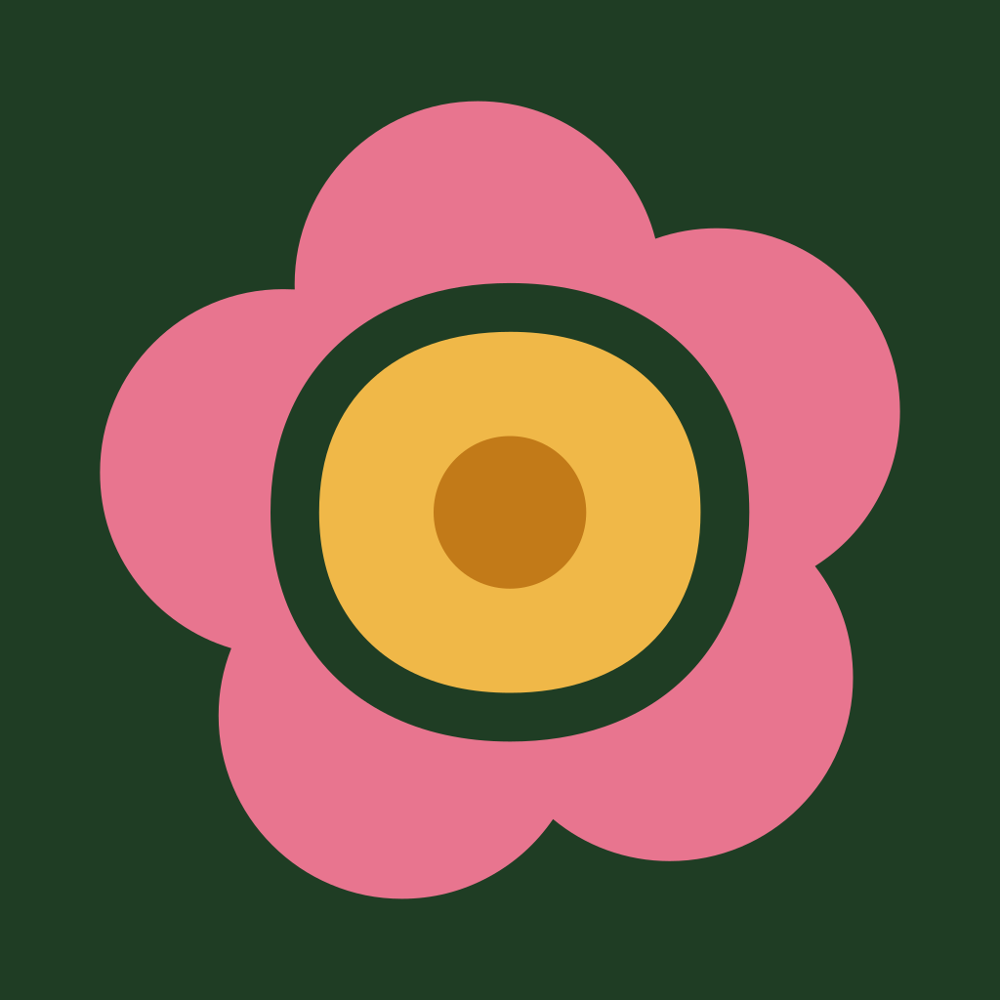
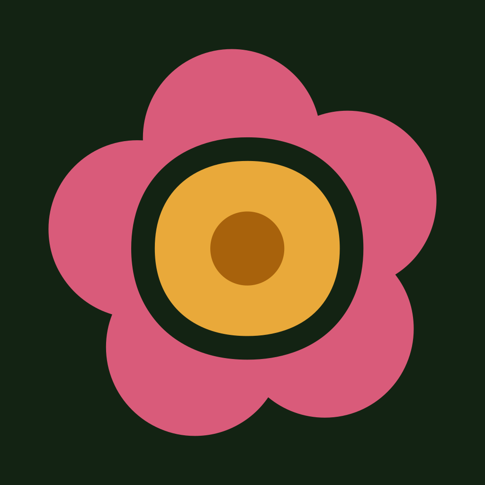
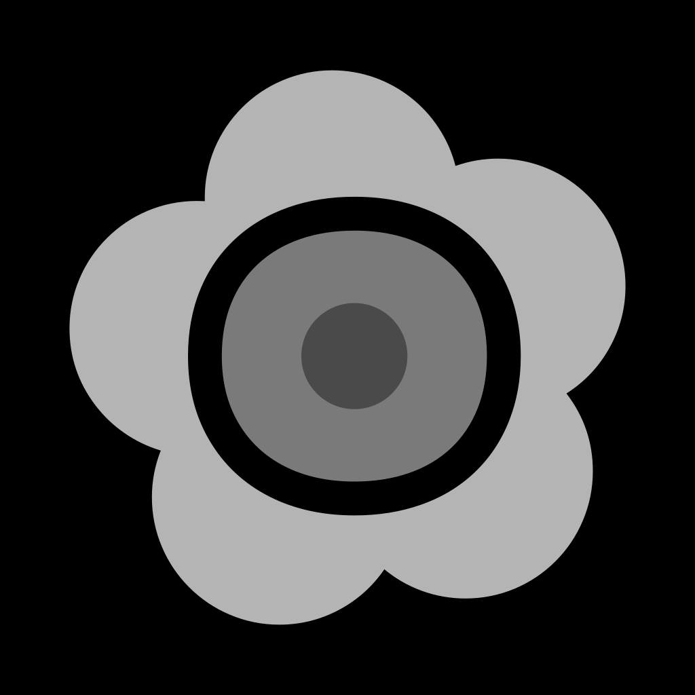
"Word" alone at 320 px, v2 above v3, same letter size
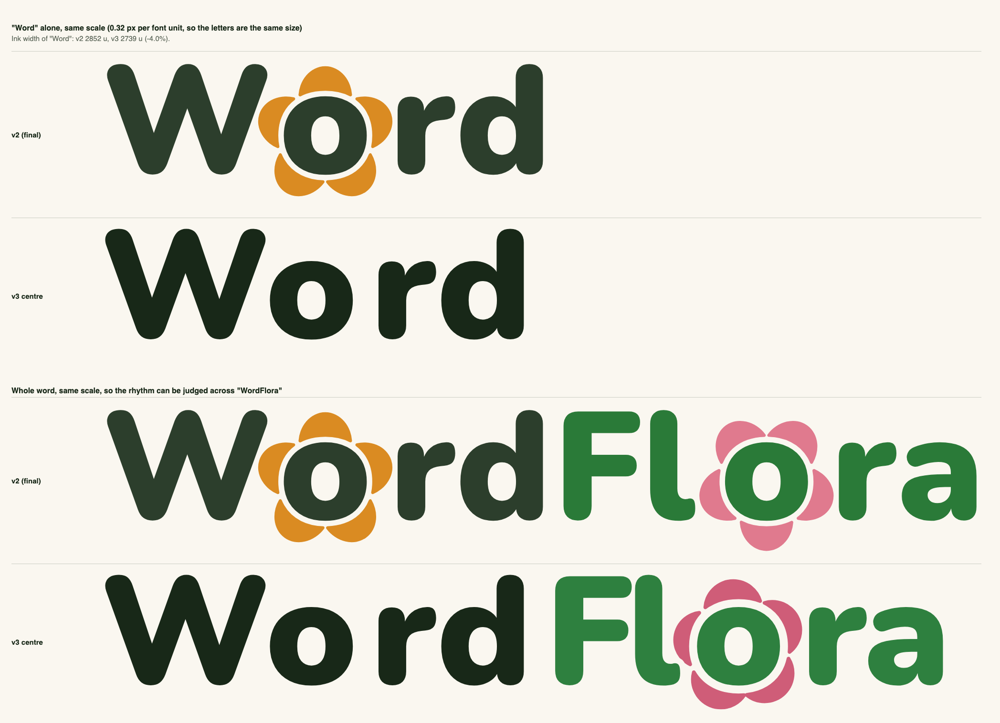
Before / after sheets


Built by build.py, rendered by render.py (headless Chromium over file://), page by page.py. Font: Nunito Black (SIL OFL), fonts/.